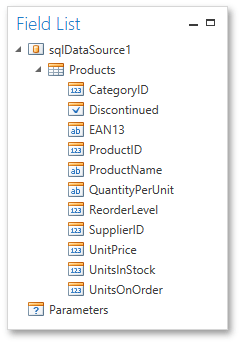
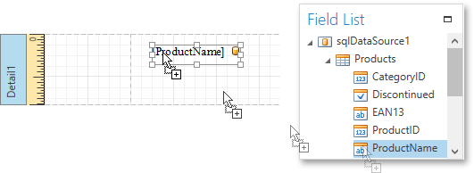
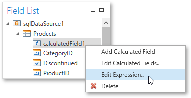
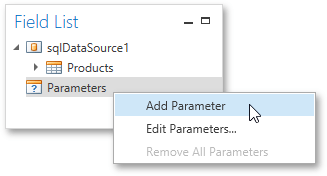

Field List
The Field List panel is intended to display the structure of the data source to which a report is currently bound. This panel can also be used to create new bound report controls, manage calculated fields and parameters.

This document consists of the following sections.
Creating Bound Report Elements
After binding a report to data, the Field List shows the structure of the report's data source assigned to the Data Source property. Then, the Field List can be used to add new bound controls.
To add a new bound report element, click a desired field item in the Field List, and then drag-and-drop it onto the report band. This creates an appropriate control bound to the selected data field.

Managing Calculated Fields
The Field List allows you to create calculated fields by building expressions based on the values of data fields, report parameter values, etc.
To add a calculated field to a report, right-click any item inside the data member node, and in the invoked context menu, select Add Calculated Field.

To edit settings of the created calculated field, select them and go to the Properties Panel. You can also right-click the calculated field and use commands available in the context menu.

Manging Report Parameters
The Field List shows existing report parameters and allows you to add new ones to the report.
To create a parameter, right click the Parameters node or any of its sub-nodes, and in the context menu, select Add Parameter.

You can customize report parameters using the Properties Panel or commands available in the context menu in the same way as you customize calculated fields.